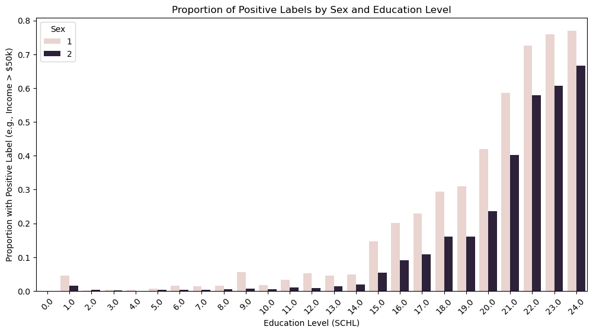
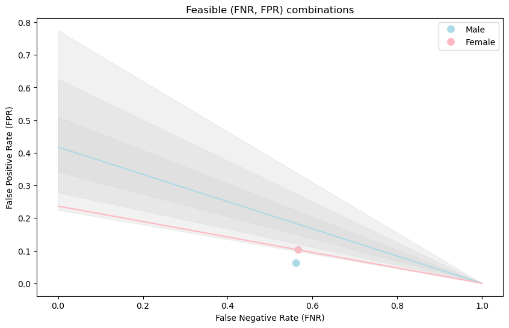

In this blog post we’ll be looking at census data and trying to predict whether a person will have an income over $50,000. We will not use a persons’ sex to predict their income. After training and implementing this algorithm, we will audit our model for gender bias. We will see that although the model doesn’t appear to perform too differently across male and female groups, there are some differences in the model performance, which we will explore further and discuss.
First, we’re reading in the census data. We’re also going to select some features that we’re going to use for our mode. We’ll be predicting income, so I chose some features that I think will be relevant – age, education level, marriage status, and relationship to “head of household”. Now, we’ll construct a BasicProblem that expresses that we are going to use the features we specified above to predict if a person’s income (“PINCP”) is over $50,000.
Before we get into creating our model, let’s get to know our dataset so that we understand the demographics that we’re working with. We’ll split our dataset into train and test sets.
This is what our dataset looks like. It has all of the features that we’re going to use to train our model, and it has a “group” column where 1 represents a male and 2 represents a female. The “label” column, which we will isolate as our target variable, is a boolean (true for a person with income > $50,000, false otherwise).
AGEP
SCHL
MAR
RELP
group
label
0
77.0
16.0
2.0
0.0
2
True
1
29.0
20.0
5.0
2.0
1
False
2
60.0
21.0
1.0
0.0
2
False
3
27.0
19.0
5.0
13.0
2
False
4
63.0
23.0
3.0
0.0
1
True
Now, let’s get some information about the data:
Number of individuals in the training set: 303053
Number of individuals in the training set with income over $50,000: 73963
Number of males in the training set: 149294
Number of females in the training set: 153759
Male proportion w/ income over $50,000: 0.3
Female proportion w/ income over $50,000: 0.19
We can see that there are more females than males in the training set, although not by much. It’s almost evenly split. There are also about 10% more males than females have an income of over $50,000. It’s important to understand the breakdown in our dataset because if we’re looking for a model to perform well for both groups, we want there to be enough data in the training set for each group. We also want to be sure that we have people from each group with income above and below the threshold, so that the model can learn patterns about people in each group with each label. Now, let’s look at intersectional trends in the data by breaking out the income groups by sex and education level.
Plotting code
# Compute proportions of positive labels by both SEX and SCHLintersectional_counts = df.groupby(["group", "SCHL"])["label"].mean().reset_index()# Rename columns for clarityintersectional_counts.columns = ["Sex", "Education Level", "Proportion with Positive Label"]# Create a bar plotplt.figure(figsize=(12, 6))sns.barplot( data=intersectional_counts, x="Education Level", y="Proportion with Positive Label", hue="Sex")# Labels and titleplt.xlabel("Education Level (SCHL)")plt.ylabel("Proportion with Positive Label (e.g., Income > $50k)")plt.title("Proportion of Positive Labels by Sex and Education Level")plt.legend(title="Sex")# Rotate x-axis labels for better readabilityplt.xticks(rotation=45)# Show plotplt.show()

Here, we can see that across all education levels, men are more likely to have an income over $50,000 than women are. We can also see that this gap seems to be exacerbated at lower education levels. There is a bigger gap between the proportion of men and proportion of women with income over $50,000 at 15-19 years of education than at the higher education levels of 21-24 years. This is an important example of intersectional trends, because we can see that the income disparity between men and women varies depending on education level.
Training the Model
Now that we understand our dataset, we’ll train a support vector machine model to predict if an individual’s income is over $50,000. An SVM model aims to find an optimal hyperplane in an N-dimensional space to separate data points into different classes. It is similar to a linear classification model, but it can be in multiple dimensions. The SVM algorithm maximizes the margin between the closest points of different classes. One of the parameters in an SVM model is the regularization term “C”, which is used to balance the misclassification penalties with maximization. If the value of “C” is higher, the model more strictly penalizes misclassifications. Before training our model, we will use cross-validation to find an optimal value of this “C” parameter.
Cross-val code
model = make_pipeline(StandardScaler(), LinearSVC(dual=False))model.fit(X_train, y_train)# Define the pipelinepipeline = make_pipeline(StandardScaler(), LinearSVC(dual=False, max_iter=5000))# Define the hyperparameter grid for Cparam_grid = {'linearsvc__C': [0.001, 0.01, 0.1, 1, 10, 100]}# Perform Grid Search with Cross-Validationgrid_search = GridSearchCV(pipeline, param_grid, cv=5, scoring='accuracy', n_jobs=-1)grid_search.fit(X_train, y_train)# Get the best C valuebest_C = grid_search.best_params_['linearsvc__C']print(f"Best C: {best_C}")# Best model with optimal Cbest_model = grid_search.best_estimator_
Best C: 0.001
Based on our cross-validation, the value of “C” that we should use is 0.001. Now, we’ll create and train our model using a pipeline. The pipeline is used to sequentially apply transformations – here, we are using StandardScaler() to standardize all of the features in the dataset.
model = make_pipeline(StandardScaler(), LinearSVC(C=0.001, dual=False))model.fit(X_train, y_train)
In a Jupyter environment, please rerun this cell to show the HTML representation or trust the notebook. On GitHub, the HTML representation is unable to render, please try loading this page with nbviewer.org.
Now, that we’ve fit our model, we’re going to test it on the test set and then audit the model for gender bias. Recall that we didn’t include sex as one of the features in our model, so we’re interested to see if the model we trained on other features might be implicitly biased by sex.
Auditing the Model
y_hat = model.predict(X_test)
Overall accuracy: 0.8
Accuracy for men: 0.79
Accuracy for women: 0.81
At first glance, we can see that our model is slightly more accurate for women, but it performs fairly similarly across each group when looking at accurate. But, let’s get more precise to understand more about the differences in accuracy between groups. We’ll get the accuracy using the accuracy score function, the PPV using the precision score function, and the true positive, true negative, false negative, and false positive rates from the confusion matrix. We’ll get all of these metrics for the whole test set, as well as the test set filtered for the female and male groups. We will put all of these metrics into a dictionary for easy access when we plot these results next.
These results tell us more information about the difference in model performance between the two groups. We can see that the male group has a lower false positive rate (FPR) than the female group, that is, our model is less likely to incorrectly predict that a man has income over $50,000 when he actually does not. The false negative rate (FNR) is very similar across groups, so we are pretty much equally likely to predict that a male or female does not have income over $50,000 when they actually do. The male group has a higher PPV value than the female group, which we’ll explore further in the plot below. We will reproduce a plot from the COMPAS paper that compares the FPR and FNR rates across groups and plots potential combinations of FPR/FNR rates for each group. The plot also looks at the potential combinations of FPR/FNR rates for the female group if we fix the PPV rate for the female group to the larger PPV value of the male group.
Code to reproduce plot from COMPAS paper
# Extract values for male and femalep_male = np.mean(y_test[group_test ==1]) # Prevalence of malep_female = np.mean(y_test[group_test ==2]) # Prevalence of femalePPV_female = subgroup_results[1]["PPV"] # Observed PPV for femalesPPV_male_fixed = PPV_female # Set PPV_male to PPV_female# Extract FNR and FPR values for observed pointsfnr_values = [subgroup_results[0]["FNR"], subgroup_results[1]["FNR"]]fpr_values = [subgroup_results[0]["FPR"], subgroup_results[1]["FPR"]]labels = [subgroup_results[0]["Sex"], subgroup_results[1]["Sex"]]# Generate range of FNR values from 0 to 1fnr_range = np.linspace(0, 1, 100)# Compute feasible FPR values for malesfpr_feasible_male = ((1- fnr_range) * p_male * (1- PPV_male_fixed)) / (PPV_male_fixed * (1- p_male))# Compute feasible FPR values for females when PPV_female = PPV_malefpr_feasible_female = ((1- fnr_range) * p_female * (1- PPV_female)) / (PPV_female * (1- p_female))# Define range of delta values for shadingdelta_values = [0.05, 0.1, 0.15] # Smaller delta -> smaller feasible regionplt.figure(figsize=(10, 6))# Scatter plot of observed valuessns.scatterplot(x=fnr_values, y=fpr_values, hue=labels, palette=["lightblue", "lightpink"], s=100)# Plot feasible set for malesplt.plot(fnr_range, fpr_feasible_male, color="lightblue", label="Feasible Set (Male)")# Plot feasible set for females when PPV_female = PPV_maleplt.plot(fnr_range, fpr_feasible_female, color="lightpink", label="Feasible Set (Female, PPV=PPV_male)")# Add nested shaded regions for varying PPV_female constraintsfor i, delta inenumerate(delta_values):# PPV_female_upper = PPV_male + delta# PPV_female_lower = PPV_male - delta PPV_male_upper = PPV_female + delta PPV_male_lower = PPV_female - delta# Compute feasible FPR values for upper and lower PPV bounds fpr_feasible_upper = ((1- fnr_range) * p_male * (1- PPV_male_upper)) / (PPV_male_upper * (1- p_male)) fpr_feasible_lower = ((1- fnr_range) * p_male * (1- PPV_male_lower)) / (PPV_male_lower * (1- p_male))# Fill region between upper and lower bounds plt.fill_between(fnr_range, fpr_feasible_lower, fpr_feasible_upper, color="lightgrey", alpha=0.3)# Labels and titleplt.xlabel("False Negative Rate (FNR)")plt.ylabel("False Positive Rate (FPR)")plt.title("Feasible (FNR, FPR) combinations")# Show plotplt.show()

This chart is a reproduction of the Chouldechova paper that we discussed in class. We fixed the proportion of true positive labels for each group, and we set the PPV values to be equal across both groups. The pink and blue points show the observed FPR and FNR rates for the male and female groups. The lines represent the possible combinations of FPR and FNR for each group, with the PPV for the male group fixed at the lower PPV that we observed for the female group. Given this, we can see that if we wanted the male FPR to be the same as the female FPR, we would need to increase the false negative rate around 35% so that the blue point would shift right onto the blue line. This tells us that we would need to make the model for males much less accurate than it is now to make the models “equal” in their FPR.
Concluding Discussion
Ultimately, this model didn’t exhibit that much bias. Even though the male group had a higher PPV, the accuracy, FPRs, and FNRs were similar across the two groups. There are many people that might be interested in this model, like people doing credit risk assessment, recruiters and employers, or banks. These institutions would all have an interest in predicting how much income an individual might make. At a large scale, this model might be slightly more accurate for predicting male income. This could potentially have a negative impact on females because they might be more likely to be denied credit or a job if their income is predicted to be lower than it actually is. This could lead to biased employment practices, unfair denial of services, or housing discrimination. On the positive side, this model could have the impact of streamlining financial services and job-matching or aiding governments in economic research and policy planning with access to income data. I didn’t feel that this model displays problematic bias. The error rates were very similar across groups, but I could see the potential for a model like this to be biased against women, given the systemic wage gap and sexism inherent in our society. Some of the other problems associated with deploying this model, like privacy issues and regulatory compliance. To mitigate these potential impacts, it would be useful to conduct bias audits at a large scale, like the one we did here. It could also be important to ensure that humans, instead of the algorithm, end up having the final say about decisions that might be impacted by the model results.